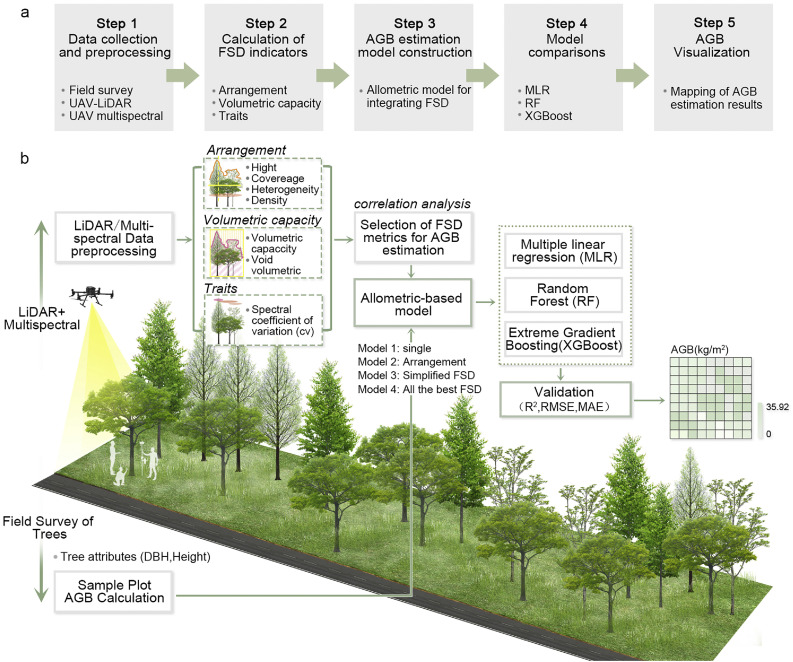

Aboveground Biomass Estimation in Kenya

Summary
This study benchmarks machine learning models at the species level within Kenyan agroforestry systems. XGBoost and Gradient Boosting significantly outperform traditional allometric models, providing improved accuracy for biomass estimation and carbon accounting.